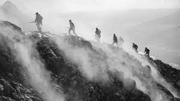
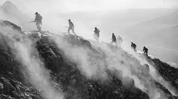

History
Early history
The early history of Italy and Rome spans a period from prehistory to the beginning of the Roman Republic in 509 BC. prehistory to the beginning of the Roman Republic in 509 BC. During this time a variety of cultural developments have taken place. The beginnings of Italy's early history lie in the first settlements that arose during the Neolithic perdiod. The people who inhabited Italy at this time, were of Indo-European origin and belonged to different cultural groups. The Bronze Age saw the establishment of complex cultures such as the Apennine culture and the Terramare culture. Terramare culture, which showed important advances in technology and social life. In the 8th century BC, the Iron Age dawned in Italy, and with it came the emergence of city states and tribal federations. the emergence of city states and tribal federations. Among these, Rome which, according to legend, was founded by Romulus in 753 BC. Rome was initially ruled by kings, some of which are legendary, such as Romulus and Remus, while others are historically attested, such as Tarquinius Priscus and Servius Tullius. In the 6th century BC, the Etruscan civilisation developed in central Italy, and the Etruscans had a significant influence on the development of Rome. The Etruscans ruled over parts of Italy and left their mark on Roman culture, religion and architecture.
Roman Republic
The ancient Roman Republic was a political era in the history of Rome that lasted from 509 BC. until the rise of the first Roman emperor in 27 BC. During this time Rome developed from a monarchy to a republic and established political institutions, which were of great importance for the later development of the Roman Empire. The foundation of the Roman Republic was initiated by the overthrow of the last Roman king Tarquinius Superbus in 509 BC. In his place, a government was established with two consuls, who were elected annually and exercised the highest political authority in the state. The consuls were responsible for the administration of the government, the military and the administration of justice. The Roman Republic was based on a system of checks and balances that served to, power between different institutions and to prevent abuse of authority. The senate, consisting of distinguished men, played an important role in advising the consuls and the formulation of laws. The popular assemblies, which consisted of Roman citizens, had the right to pass laws and make political decisions. During the republican period, Rome expanded its territory and gradually conquered other parts of Italy. However, there were also internal conflicts and social tensions within Roman society. The Roman Republic experienced a series of conflicts known as the Roman Wars, including The Punic Wars against Carthage and the wars against various Italic peoples.. In the late republican period there was political and social unrest, which led to a shift in the balance of power. of the balance of power. Powerful political leaders, such as Gaius Marius and Lucius Cornelius Sulla, fought for control and established their own supremacy. This ultimately led to the collapse of the republican system. In 27 BC, the Republic was formally ended when Gaius Octavius Thurinus, later known as Augustus Augustus, took power and transformed the Roman Empire into a monarchical form of government.

Roman Empire
The Roman Empire was one of the most important civilisations of the ancient world and extended
over a period of about 500 years, from 27 BC to 476 AD. It began with the reign
of Augustus, the first Roman emperor, and ended with the fall of the Western Roman Empire.
Under Augustus and the following emperors, the Roman Empire reached its peak.
The empire stretched from Britain in the west to the Middle East and North Africa in the east and south.
Roman rule brought stability, peace and comprehensive administration to the conquered territories.
The Roman Empire was a mixture of republic and monarchy. Although there were emperors, the senate retained
an important role in government. The Roman legal system, which served as the basis for many modern
legal systems was well developed, and the Roman infrastructure, including roads, bridges
and aqueducts, was impressive.
The Roman Empire was known for its military strength. The Roman legions were disciplined
and well trained, which helped them to conquer and control large parts of Europe. The expansion
of the empire led to a cultural fusion, as the Romans took over ideas, technologies and traditions from the conquered peoples.
from the conquered peoples.
Over time, however, the Roman Empire began to struggle with internal and external challenges.
Corruption, economic problems and political instability weakened the empire.
Roman society was characterised by social differences, and riots and uprisings were not uncommon.
In the 3rd century AD, the Roman Empire began to fall apart. It was divided into a western and an
eastern half, whereby the capital of the west was moved to Ravenna and the capital of the east remained in
of the East remained Rome. The Western Empire fell into crisis, exacerbated by invasions by Germanic tribes.
tribes, and in 476 the last western Roman emperor was deposed.
The Eastern Roman Empire, which became known as the Byzantine Empire, continued to survive and develop into a powerful and culturally rich empire.
into a powerful and culturally rich empire. It continued until the Ottoman conquest in 1453.
The Roman Empire left a significant legacy in the form of law, government, architecture, art,
literature and language. Its cultural and political influences shaped Europe and Western civilisation for centuries.
Middle Ages
After the fall of the Western Roman Empire in 476 AD, a new era began in Italy,
the Middle Ages. During this time, the country experienced a multitude of political, social and cultural changes.
Italy became the scene of conflicts between different powers and kingdoms.
The Germanic Ostrogoths conquered large parts of Italy and founded the Kingdom of the Ostrogoths,
while the Byzantine Empire tried to maintain its control over parts of the country.
In the 8th century AD, Italy fell under the rule of the Lombards, another Germanic people who founded the Lombard Empire.
Germanic people who founded the Lombard Empire.
During the Middle Ages, the Church also developed into a powerful institution in Italy.
The Pope, who resided in Rome, gained political influence and claimed spiritual and secular authority.
secular authority. The schism of 1054 led to the definitive separation between the
Roman Catholic Church in the West and the Orthodox Church in the East.
Urban culture also experienced a boom in the Middle Ages. In northern Italy, flourishing
flourishing trading cities such as Venice, Florence and Genoa. Trade with the Middle East and the
the Byzantine Empire brought prosperity and cultural exchange to these regions.
The Italian city states became important centres of trade, art and culture.
During the Middle Ages, there were also numerous warlike conflicts in Italy. The cities and
regions fought for territorial control and political power. The Guelfs and Ghibellines,
rival political factions, often engaged in fierce confrontations for supremacy..
In the 13th century, the members of the Hohenstaufen family, especially Frederick II,
established a centralised rule over Italy. However, their rule was challenged by internal conflicts and the
rise of the Italian city states.
During the Renaissance, which began in the 14th century, Italy experienced a heyday of artistic and intellectual creativity.
and intellectual creativity. The Renaissance movement, which focused on the reawakening of the
ancient heritage, spread from Italy throughout Europe. Important artists,
writers and thinkers such as Leonardo da Vinci, Michelangelo, Dante Alighieri and Niccolò Machiavelli
shaped this epoch.
Modern Age
After the Middle Ages, Italy became a territory with many political and territorial fragmentations.
The country was divided into numerous independent city states, duchies and petty kingdoms,
vying for power and control.
In the 15th century, the Italian city-states began to be threatened by larger European powers.
France, Spain and the Holy Roman Empire invaded Italy and tried to establish their dominance.
The so-called Italian Wars led to protracted conflicts and frequent changes of power.
In the 16th century, other political entities emerged in Italy, including the Duchy of Milan under the rule of the Sforza, the Duchy of Savoy and the Duchy of Modena.
of the Sforza, the Duchy of Savoy and the Duchy of Modena. Venice and the Republic of Genoa were also important players in the region.
In the 18th century, Italy increasingly came under the domination of foreign powers. Parts of the country
were controlled by Austria, Spain and France. The Napoleonic Wars had a strong
strong influence on Italy and led to the establishment of satellite states such as the Kingdom of Italy
and the Italian Republic.
After the collapse of the Napoleonic Empire and the Congress of Vienna in 1815, Italy was once again
was once again divided into numerous small states and kingdoms. The dissatisfaction with foreign rule
and the call for national unity and independence grew louder and louder.
The Risorgimento, the Italian unification movement, began in the 1830s. Under the leadership
of personalities such as Giuseppe Mazzini, Giuseppe Garibaldi and Camillo Cavour, nationalist aspirations were
nationalist aspirations were strengthened and the Italian states united.


Italian Kingdom
After the unification of Italy in 1861 under the reign of King Victor Emmanuel II, the Italian kingdom
entered a period of consolidation and nation-building.
However, the country faced many challenges, including consolidating political
political power, economic development and addressing regional differences.
Under the leadership of prime ministers such as Camillo Cavour and later Francesco Crispi,
Italy became a parliamentary monarchy with a constitution. However, the political system was
unstable, as different political factions fought for power and influence. This led to
frequent changes of government and political uncertainty.
The new government focused on modernising the country. Reforms were introduced in the
Education, justice and administration. Infrastructure projects such as the construction of
railways and the improvement of communication routes to promote trade and economic development.
The Italian economy experienced steady growth during this period. The industrial revolution
reached the country, and new industries such as textile production, the steel industry and mechanical engineering
emerged. However, large parts of the population remained affected by poverty and economic deprivation, especially in rural areas.
especially in the rural areas of the South.
One of the greatest challenges for the Italian Kingdom was to overcome regional
differences and integrating the formerly independent territories into the national framework.
In particular, the regions of South Tyrol, Veneto and Rome remained temporarily outside the sphere of influence of the
of the kingdom and were later incorporated.
In foreign policy, Italy sought to expand its territorial borders. In 1882
The Kingdom of Italy formed an alliance with the German Empire and the Austro-Hungarian Monarchy.
Monarchy, the so-called Triple Alliance. Italy attempted to strengthen its position in the Mediterranean region and
conquered colonies in Africa, including Eritrea, Somalia and parts of Libya.
However, domestic politics continued to be marked by political conflicts and social tensions.
The anarchist movement gained influence and there were violent clashes and political assassinations.
political assassinations. The social question and the rights of the working class became central themes
in the political debate.
Before the First World War, Italy suffered from economic problems and a growing dissatisfaction
with the government. The political landscape was strongly polarised, and nationalist and socialist movements gained
movements gained in importance.


 


World Wars
The First World War began in 1914 and Italy initially opted for neutrality.
The Italian kingdom, which felt obliged to protect its territorial claims and interests,
entered the war in 1915 on the side of the Allies.
Italy fought against Austria-Hungary on the eastern front along the border with the Alps.
Although Italy could only achieve limited military successes due to the difficult terrain and the lack of resources
limited military successes, it nevertheless entered the 1915
Treaty of London, which promised Italy large territorial gains. After the
end of the war, Italy received some of the promised territories in the 1919 Treaty of Saint-Germain and the Treaty of Trianon.
Italy received some of the promised territories, including parts of the former Austro-Hungarian
Empire and the Ottoman Empire.
The period after the First World War in Italy was marked by social and political tensions.
Economic conditions deteriorated and there were strikes and social unrest.
These circumstances favoured the emergence of the fascist movement
under Benito Mussolini.
Mussolini and his National Fascist Party gained power in the 1920s
and achieved a march on Rome in 1922, during which Mussolini was installed as prime minister.
Mussolini established a dictatorship based on national unity, the leader principle and
totalitarian control. The fascist regime promoted an aggressive foreign policy
and sought to revive the Roman Empire.
Italy also took part in military adventures. In 1935, Italy attacked Ethiopia and
conquered the country in 1936. In 1939, Italy joined National Socialist Germany in the
World War II, although its military performance was limited and it suffered significant defeats
During the Second World War, Italy occupied various countries in Europe, including Albania, Greece and parts of France.
Albania, Greece and parts of France. However, the course of the war changed in 1943,
when the Allies landed in southern Italy and the fascist regime was overthrown.
Italy joined the Allies and declared war on the German Reich.
The period after Mussolini's fall was marked by a power struggle between various political groups.
Italy was liberated by the Allies, but the political
remained unstable. The Democrazia Cristiana (Christian Democratic Party)
gained influence, and in 1946 Italy became a republic.
The Second World War left behind massive destruction in Italy and caused profound social change.
The country had to cope with reconstruction and economic recovery.
A period of political change and social transformation began,
which formed the basis for the development of the Italian Republic.
Modern Italy
After the end of the Second World War, Italy entered a phase of reconstruction and political reorganisation.
The country was badly damaged and had to recover both economically and politically.
The political landscape was shaped by the dominance of the Christian Democratic Party
(Democrazia Cristiana, DC), which was in government for a long time.
Italy became an important member of the Western Alliance and joined NATO in 1949.
In the 1950s and 1960s, Italy experienced remarkable economic growth,
which became known as the "economic miracle". The country modernised its industry,
developed the tourism sector and benefited from increasing integration into the European market.
In the 1970s, however, Italy was rocked by political and economic crises.
The country's debt rose sharply, there was social unrest and political instability.
This led to a period of political fragmentation in which several governments were short-lived
and frequent coalition changes took place.
The 1990s were marked by a series of political scandals that shook Italian politics.
The so-called "Tangentopoli" (bribery affair) led to the dissolution of
the dissolution of the traditional political parties and the rise of new political forces.
The end of the 20th century and the beginning of the 21st century were marked by efforts,
to reform the economy and promote political stability. Italy joined the Eurozone
and committed itself to greater European integration.
Italy today is a parliamentary republic with a multi-party system. The country plays an
important role in the European Union and is a popular tourist destination with a rich cultural history
and a diverse landscape.
Despite a number of challenges, such as high public debt, a weak economy and
coping with migration flows Italy remains an important player on the international stage
and is committed to promoting peace, cooperation and cultural heritage.